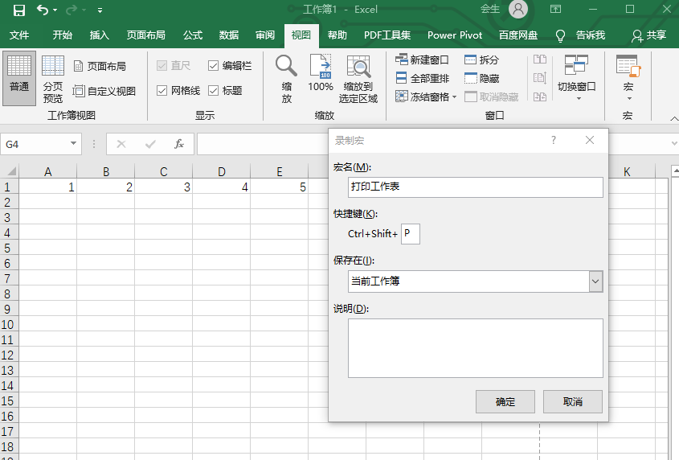
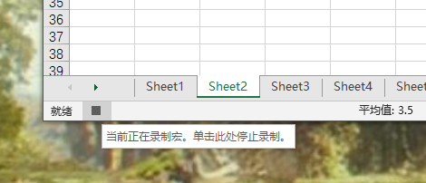
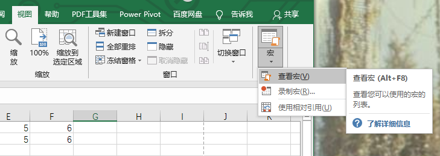

- 00 导读 入门Python的必备知识.md.html
- 00 开篇词 重复工作这么多，怎样才能提高工作效率？.md.html
- 01 拆分与合并：如何快速地批量处理内容相似的Excel？.md.html
- 02 善用Python扩展库：如何批量合并多个文档？.md.html
- 03 图片转文字：如何提高识别准确率？.md.html
- 04 函数与字典：如何实现多次替换.md.html
- 05 图像处理库：如何实现长图拼接？.md.html
- 06 jieba分词：如何基于感情色彩进行单词数量统计？.md.html
- 07 快速读写文件：如何实现跨文件的字数统计？.md.html
- 08 正则表达式：如何提高搜索内容的精确度？.md.html
- 09 扩展搜索：如何快速找到想要的文件？.md.html
- 10 按指定顺序给词语排序，提高查找效率.md.html
- 11 通过程序并行计算，避免CPU资源浪费.md.html
- 12 文本处理函数：三招解决数据对齐问题.md.html
- 13 Excel插件：如何扩展Excel的基本功能？.md.html
- 14 VBA脚本编程：如何扩展Excel，实现文件的批量打印？.md.html
- 15 PowerShell脚本：如何实现文件批量处理的自动化？.md.html
- 16 循环与文件目录管理：如何实现文件的批量重命名？.md.html
- 17 不同操作系统下，如何通过网络同步文件？.md.html
- 18 http库：如何批量下载在线内容，解放鼠标（上）？.md.html
- 19 http库：如何批量下载在线内容，解放鼠标（下）？.md.html
- 20 不同文件混在一起，怎么快速分类？.md.html
- 21 SQLite文本数据库：如何进行数据管理（上）？.md.html
- 22 SQLite文本数据库：如何进行数据管理（下）？.md.html
- 23 怎么用数据透视表更直观地展示汇报成果？.md.html
- 24 条形、饼状、柱状图最适合用在什么场景下？.md.html
- 25 图表库：想要生成动态图表，用Echarts就够了.md.html
- 26 快速提取图片中的色块，模仿一张大师的照片.md.html
- 27 zipfile压缩库：如何给数据压缩&加密备份？.md.html
- 28 Celery库：让计算机定时执行任务，解放人力.md.html
- 29 网络和邮件库：定时收发邮件，减少手动操作.md.html
- 30 怎么快速把任意文件格式转成PDF，并批量加水印？.md.html
- 春节特别放送1 实体水果店转线上销售的数据统计问题.md.html
- 春节特别放送2 用自顶至底的思路解决数据统计问题.md.html
- 春节特别放送3 揭晓项目作业的答案.md.html
- 结束语 和我一起成为10X效率职场人.md.html
- 捐赠
14 VBA脚本编程：如何扩展Excel，实现文件的批量打印？
你好，我是尹会生。
打印，是办公中必不可少的一步，比如在会议上，我们需要通过Excel表格向客户/领导展示工作成果。
但在使用Python对Excel进行打印的时候，我们还得给Python安装上Excel、Windows和硬件设备管理的库，过程极其复杂，远远达不到我们自动化办公的需要。尤其是面对类似的临时性需求，就更没必要使用Python了。
庆幸的是，Excel自带了打印功能，而我们可以利用Excel的扩展——“宏”来实现打印，并且通过VBA脚本增强“宏”的功能，从而实现批量打印，满足我们自动化办公的要求。
那么在今天这节课，我就带着你学习Excel的另一个自动化功能：“宏”和VBA脚本。
宏和VBA脚本的用途
宏是Excel自带的扩展功能，可以记录的内容包括对Excel格式和文字的修改，它会像录像机一样记录下你在Excel中的操作。当你有一系列的动作需要多次执行，并且每次执行动作的顺序又完全相同，就可以重新播放，把这些操作自动再执行一遍。所以对于办公中临时性的需求，使用宏要比掌握每个Excel操作对应的Python函数要更简单。
你可以使用宏的录制功能，把格式调整、复制粘贴、打印等重复操作记录下来，并保存成一个快捷键。当你需要重复执行这条流水线作业时，就可以通过执行快捷键实现自动化操作。
不过，虽然宏能够像录像机一样通过重放功能实现自动化，但是它默认情况下只能实现部分功能的录制，也就是半自动化，要想把另一部分也自动化，就要使用宏的底层实现VBA脚本，例如像批量打印这些需求，就需要VBA脚本的循环扩充宏来实现自动化。
所以我在这节课，还会带你学习宏的底层实现VBA脚本，利用VBA脚本可以扩展宏的功能，把手动操作部分实现自动化。
那么接下来，我就通过对Excel的任意一个工作表进行打印的案例，给你具体讲解一下宏的录制和执行。
如何实现Excel的批量打印
使用宏，实现单个工作表的打印
为了方便你学习，我准备了一个包含6个工作表的Excel文件，这6个工作表命名分别为sheet1-sheet6。要想基于宏实现自动化打印，需要通过这个步骤来实现：
- 录制宏；
- 手动执行一次操作；
- 停止宏录制；
- 通过快捷键执行宏。
首先我先来带你看一下，怎么把打印的过程录制为宏。
录制宏，需要指定宏名称和快捷键。你需要在Excel的“视图”菜单栏找到“宏”下拉列表，在其中选择“录制宏”按钮，点击按钮就会弹出“录制宏”窗口。此时你需要把宏名改为“打印工作表”，再把快捷键改为Ctrl+Shift+P，点击确认之后，你接下来对Excel的操作就会被宏自动记录了。
这里以录制“打印sheet2工作表”这个操作为例，我把录制宏的窗口截图贴在下方，供你参考。

录制前有两点需要你注意：
- 快捷键如果和Excel默认的快捷键发生冲突， 那么默认的快捷键功能就会失效，因此在录制前，你在给宏指定快捷键的时候，应当避开默认快捷键。
- 另一点需要注意的是，点击确定后宏就开始录制了，因此任何需要重复操作之外的操作步骤，都有可能会影响执行宏时的结果，所以我们在录制过程中应尽量减少不必要的操作。
接下来，我需要手动执行一遍打印操作，并把操作过程录制为宏。具体操作步骤是：
- 录制开始前先激活sheet2，以免把激活sheet2的步骤记录到打印过程。
- 在录制宏窗口点击“确定”按钮，开始录制。
- 选择文件-打印，为了让你能更好地观察到结果，我把打印机设置为打印到PDF，然后点击打印按钮。
- 设置pdf的路径，并手动填入文件名sheet2.pdf。
- 点击保存。
第三步是停止宏的录制。在点击Excel左下角方形按钮后，就可以停止录制。停止之后，一个新的宏就录制完成了。
停止录制的截图我放在下方，可以帮你快速找到这一功能在Excel中的位置。

最后一步是执行宏。例如我需要把Sheet4打印成PDF，可以先激活Sheet4，并执行快捷键Ctrl+Shift+P，进行打印。
通过使用宏进行单个工作表打印操作，你会发现宏的优点和缺点。
它的优点是记录操作步骤的方式简单，尤其适合对Excel进行多次重复的格式和内容调整。而且掌握宏还不用学习Excel之外的编程技能，就能实现重复任务的自动化。
不过它的缺点也很明显，在使用宏之前，我们激活工作表和执行宏之后指定保存文件的名称，都需要手动操作。这就和我们使用Python自动化处理Excel是类似的，我们把自动化处理工作分成三个部分：为重复任务准备变量、为重复任务编写了一个for循环程序反复执行，为执行之后的结果自动保存结果。
可以看到，宏实现的就是for循环中的流水线操作。而对于使用宏之前以及使用宏之后的操作，我们是可以通过VBA脚本来进行优化，从而把相关操作实现自动化。
所以今天这节课，我们就再来学习一下VBA脚本。Excel的宏是基于VBA脚本实现的，如果你需要将打印多个工作表的手工操作也使用宏自动实现，需要通过VBA脚本来扩展宏。
使用VBA脚本的循环，打印多个工作表
接下来，我就教你怎样查看当前宏的VBA脚本，并通过新的VBA脚本来扩展当前的宏，从而实现工作表的自动化批量打印。
首先，我们需要查看当前宏的VBA脚本。我们可以使用视图-宏-查看宏按钮，选中要查看的宏，并点击右侧的编辑按钮，这样就可以在打开的VBA脚本编辑器窗口查看当前宏的VBA代码。
我把查看方法和代码都贴在下方，供你学习。

这个VBA脚本就是宏实现打印单个文件的全部代码，它由三部分组成，分别是Sub过程、注释、实现打印的语句。
- 过程，是VBA代码完成一个任务的所有操作的集合。例如在上面这段代码中，实现打印任务的所有操作都被放在“Sub 打印工作表()”这一过程中，当你按快捷键Ctrl+Shift+P之后，Excel会按照Sub过程中的代码来运行。而我们要想实现自动打印到文件，就需要在Sub过程中扩展宏记录的打印任务。
- 注释，是指用于向其他人描述“过程”实现的目的，注释的内容不会被VBA执行。它的格式是使用引号开头行，这一行都是注释的内容。这和Python中以#开头的行注释用法是相同的。
- 实现打印的语句。代码中这两行就是实现打印的语句，我把代码从截图中单独拿出来供你参考。
ActiveWindow.SelectedSheets.PrintOut Copies:=1, _ Collate:=True, IgnorePrintAreas:=False
这段代码由三部分组成，这三部分分别是要操作的对象，对象的属性和方法，方法的参数。我们依次来看下：
第一部分，对象是指工作簿、工作表、单元格、图片、图表、透视表等Excel中的具体元素。在Sub过程中要对哪个元素做修改，就需要在过程中指定该对象。
例如代码中的“ActiveWindow代表了活动的Excel窗口对象，它意味着宏将要对当前活动的窗口做一些动作。
第二部分对象的属性和方法，指的是对象的一部分或一种行为。这里需要注意，属性和方法是有区别的。
- 对象的属性用来描述对象的性质和特点。比如字体的颜色、字号等；
- 对象的方法是指在对象上执行的某个动作，比如要移动、删除、打印这个对象。
例如下面这一行代码：
ActiveWindow.SelectedSheets.PrintOut
在这一行代码中，SelectedSheets是属性，它代表当前活动窗口下被选定的工作表，PrintOut是方法，它被ActiveWindow对象调用，表示将要执行打印这一行为。总结来说，这条语句的作用就是打印当前活动的Excel窗口下选定的工作表。
第三部分是PrintOut方法的三个参数，它的三个参数更改了打印的默认行为。我把这三个参数写在下面供你参考：
Copies:=1, Collate:=True, IgnorePrintAreas:=False
- Copies参数指定打印份数为1份；
- Collate参数指定逐份打印；
- IgnorePrintAreas则忽略打印区域并打印整个对象。
宏就是按照上面这两行VBA代码实现打印的。不过在你对一个新的工作表执行宏的时候，会发现，你不仅需要手动选择要打印的工作表，还需要手动指定要保存的工作表的文件名称，所以我们可以扩展宏的默认功能，让VBA脚本从半自动化到自动化。
具体怎么做呢？在宏打印工作表的VBA语句的基础之上，我们只需要增加遍历工作表和自动指定输出文件名这两个功能，就可以实现工作表的自动化批量打印。
因此，我要在Sub过程中改造打印方法，增加这两项功能，增加之后的代码如下：
Sub 打印工作表()
'
' 打印工作表 宏
'
' 快捷键: Ctrl+Shift+P
With Application.FileDialog(msoFileDialogFolderPicker)
If .Show = -1 Then filepath = .SelectedItems(1) & "\"
End With
For Each sht In ActiveWorkbook.Worksheets
sht.Select
ActiveWindow.SelectedSheets.PrintOut Copies:=1, _
Collate:=True, IgnorePrintAreas:=False, _
printtofile:=True, _
prtofilename:=filepath & sht.Name & ".pdf"
Next
End Sub
通过快捷键“Ctrl+Shit+P”再次运行宏，你会发现改造之后的代码与改造前相比，有这样两个区别。
第一个区别是，改造前我们需要手动点击一个工作表，让它处于激活状态。而改造之后，宏会自动依次选择每个工作表。
第二个区别是，改造前每次执行宏的时候，需要手动输入要打印的pdf文件名。而改造后，宏会弹出选择存放打印文件的目录。当你选择了一个目录之后，宏会自动把所有的工作表，均以“工作表名称.PDF”作为文件名进行打印。
可以看到，改造之后的代码比默认的宏效率更高了。接下来我就来详细解释一下我是怎么使用VBA脚本遍历工作表，以及怎么自动输出文件名的。
在代码的第11行，“For Each … In ”结构是VBA脚本的遍历功能，遍历的对象是“ActiveWorkbook.Worksheets”，这个对象表示当前激活的是工作簿中所有的工作表。那么我们把每个表存入sht后，就可以实现工作表的遍历操作了。
这里我还要再提醒你一下。VBA的遍历和Python的主要区别是，前者遍历需要使用Next语句结束，而Python是依靠缩进实现循环语句块结束的，这也是使用Python编写程序的同学经常会遗漏Next语句的地方。
再来看怎么实现自动打印PDF文件的功能。这一功能的实现由弹出保存文件夹的对话框和整合文件路径两部分组成。
第一部分是在代码的第7、8行，我使用了FileDialog对象，这个对象会弹出对话框让用户选择路径。同时，filepath 变量会得到用户选择的文件保存路径。
第二部分在代码的15、16行，我为PrintOut打印方法增加了两个参数。分别是：printtofile和prtofilename。
printtofile参数类似一个开关，使用这个参数的目的，是让打印函数由默认的弹出对话框让用户手动输入文件名改为“将对象打印到文件”。
另一个prtofilename参数指定了打印的对象将以什么文件名来保存打印结果。为了把保存的文件名设置为“路径+表名.pdf”的格式，我通过“&”符号连接了两个变量“filepath 、 sht.Name”和字符串 “.pdf”” ，这一就组成了“filepath & sht.Name & “.pdf””的文件命名形式。
在这里我还想强调一下FileDialog的代码位置，我把FileDialog对象写在遍历之前，是因为我不希望每次读取工作表的时候，都需要选择一次存放路径，这样会让批量打印再次变成需要手动指定路径后才能执行，因此我就把FileDialog对象的代码放在批量读取工作表之前，这样也会提高VBA脚本的自动化程度**。
通过VBA脚本增强了默认录制宏的功能，实现了批量打印工作表的功能。
小结
在今天这节课，我教你使用了“宏”这个强大的功能。通过宏的录制与回放，你可以实现Excel的自动化操作。此外，当有些操作没法被宏自动记录的时候，你还可以通过手动编写VBA脚本，来扩展宏默认的功能，让对工作表或单元格的批量操作从半自动化到自动化。
我在这节课中用批量打印的例子，给你展示了VBA的通过对话框指定保存路径、遍历工作表增强默认宏的代码，为你展示了迭代、判断和变量赋值，以及VBA中最重要的对象和操作对象的属性和方法。
需要说明的是，VBA支持Office的所有对象，通过对象的属性和方法，再配合VBA语法的判断循环，就能弥补默认宏的不足，实现几乎所有Office办公的自动化操作。
不过VBA支持的对象多达上百个，我在这节课中只给你介绍了其中一个对象，也就是激活工作表这个对象。通过VBA脚本的语法配合激活工作表对象，你可以掌握VBA自动化的基本流程。如果你想了解VBA支持的所有对象及其属性方法，可以参考官方文档获得更详细的介绍。当你用到哪个对象，从文档里搜索关键字，找到它即可。
思考题
按照惯例，最后我要给你留一道思考题。你能否通过InStr函数（判断包含在字符串中的某个关键字是否存在，存在返回关键字位置，不存在返回0 参考）改造批量打印脚本，让脚本实现包含关键字“汇总”，然后再打印报表？
欢迎把你的思考和想法写在评论区，我们一起交流讨论。此外，你还可以点击课程详情页的“戳我进群”，扫描二维码，加入我们的课程读者群，我也会在群里为你解疑答惑。
© 2019 - 2023 Liangliang Lee. Powered by gin and hexo-theme-book.